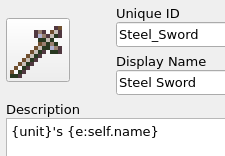
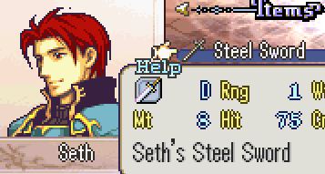

Text Formatting Commands
written by rainlash last updated 2024-11-13
Dialogue Formatting Commands
In order to have your in-game dialog between characters or between the narrator and the player flow well and be more interesting to read, you can use several special dialog commands.
{w}, {wait}: Waits for the user to press A. Automatically placed at the end of any speak command unless text ends with {no_wait}.
{no_wait}: Place at the end of a dialog and the dialog will not wait for the user to press A.
{br}, {break}: Line break.
{clear}: Clear the text and line break.
|: shorthand for {w}{br} in sequence.
{semicolon}: Adds a ;
{lt}: Adds a <
{gt}: Adds a >
{lcb}: Adds a {
{rcb}: Adds a }
{tgs}: Toggles whether the speaking sound occurs.
{tgm}: Toggles whether the portrait’s mouth will move while talking.
{max_speed}: After this command, dialog will be drawn immediately to the screen.
{starting_speed}: After this command, dialog will be drawn at the normal speed to the screen.
{command:??}, {c:??}: Allows you to run any event command inline while dialog is being drawn to the screen. For instance: s;Eirika;I'm... so.... {c:set_expression;Eirika;CloseEyes} sleepy...
General Formatting Commands
The below formatting can be used in both dialogue and most description boxes for units/items/skills/etc.
<red>: Can be used to turn the font to red color. Turn back to normal with </red> or </>. Can also use <blue>, <green>, etc.
<icon>??</>: Paste any 16x16 icon with a name directly into the text. For instance, <icon>Waffle</>.
<text>: Can be used to change the font. Turn back to normal with </text> or </>. Can also use <nconvo>, <narrow>, <iconvo>, <bconvo>, etc.
<wave>: Can be used to change the text effect. Turn back to normal with </wave> or </>. Can also use <wave2>, <sin>, <jitter>, <jitter2>, etc.
Advanced usage: some text effects may have arguments that can be used to customize the effect. For example, wave has a amplitude argument that can be used to customize the amplitude of vertical wave oscillation.
The exact usage would look like <wave amplitude=4.5>some text</>. The general format for effect arguments is <effect arg1=val1 arg2=val2 ...>. Parsing for arguments is whitespace and case sensitive.
For a full effect list look at app/engine/graphics/text/text_effects.py. Both TextEffect and CoordinatedTextEffect classes are available to use as text effects in dialog, and the corresponding names for each effect is under the effect class as its nid and the available arguments for each effect is the arguments to its __init__ function excluding self and idx arguments.
Evaluated Descriptions
What Are They
Some descriptions in the editor allow you to use evaluated text. These are things like {v:} and {e:}.
Specifically at the moment this includes:
Unit descriptions
Item descriptions and skill descriptions
Evaluated Variables
The evaluated text for the statements above all have access to a few common variables.
Like all evaluated statements evaluated text has access to a variable called game. This is the variable for the game state.
All descriptions also have access to a variable called self. This refers to the variable in the engine code that represents the object that the description belongs to. For example, the self variable for a unit description refers to a unit object in the engine code. Likewise for items and skills.
Items and skill descriptions have access to an additional variable called unit. This variable refers to the unit that currently owns this item or skill. This is equivalent to the statement {e:game.get_unit(self.owner_nid)} and is just a convenience variable.
Examples
Item Ownership
This is a simple concrete example. We can add a description for who’s item it is in the item description. For example if Seth is holding a Steel Sword, we can modify the description of a Steel Sword to be {unit}'s {e:self.name}
This will be evaluated and displayed as Seth's Steel Sword.


Dynamic Gender and Pronouns
If we wanted to add dynamic gender we can use this feature. For example if we wanted dynamic gender for a certain unit, we can set a persistent variable during unit creation and use it in the description.
"A wild {e:"man" if "{v:WildPronoun}" == "He" else "woman" if "{v:WildPronoun}" == "She" else "person"} raised in the forests of Nabu. Has a fear of blood and hates spiders."
Lets say WildPronoun was set to "He" then the entire description would evaluate to: A wild man raised in the forests of Nabu. Has a fear of blood and hates spiders.
Kill Tracker
We can add a kill tracker to an item or skill using this feature. We can set a persistent variable tracking the number of kills a unique weapon has been used for and show it in the description.
"A blade that has taken {v:UniqueWeaponKills} lives."
Lets say UniqueWeaponKills has tracked 10 kills so fa, then this description would evaluate to: A blade that has taken 10 lives.
Advanced Usage
Since self refers to the object that the description belongs to, you have access to all variables accessible from that object. You can use that knowledge however you like.